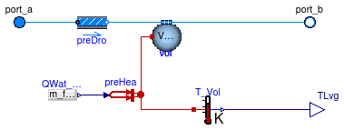

Package with base classes for Buildings.Fluid.HeatExchangers.CoolingTowers
This package contains base classes that are used to construct the models in Buildings.Fluid.HeatExchangers.CoolingTowers.
Extends from Modelica.Icons.BasesPackage (Icon for packages containing base classes).
| Name | Description |
|---|---|
| CoolingTower | Base class for cooling towers |
| Functions for fan characteristics |
 Buildings.Fluid.HeatExchangers.CoolingTowers.BaseClasses.CoolingTower
Buildings.Fluid.HeatExchangers.CoolingTowers.BaseClasses.CoolingTower
Base class for cooling towers

Base class for a steady-state cooling tower.
The variable TAirHT is used to compute the heat transfer with the water side of the cooling tower.
For a dry cooling tower, this is equal to the dry-bulb temperature.
For a wet cooling tower, this is equal to the wet-bulb temperature.
Extends from Buildings.Fluid.Interfaces.TwoPortHeatMassExchanger (Partial model transporting one fluid stream with storing mass or energy), Buildings.BaseClasses.BaseIcon (Base icon).
| Type | Name | Default | Description |
|---|---|---|---|
| replaceable package Medium | PartialMedium | Medium in the component | |
| Nominal condition | |||
| MassFlowRate | m_flow_nominal | Nominal mass flow rate [kg/s] | |
| Pressure | dp_nominal | Pressure difference [Pa] | |
| Initialization | |||
| MassFlowRate | m_flow.start | 0 | Mass flow rate from port_a to port_b (m_flow > 0 is design flow direction) [kg/s] |
| Pressure | dp.start | 0 | Pressure difference between port_a and port_b [Pa] |
| Assumptions | |||
| Boolean | allowFlowReversal | true | = true to allow flow reversal, false restricts to design direction (port_a -> port_b) |
| Advanced | |||
| MassFlowRate | m_flow_small | 1E-4*abs(m_flow_nominal) | Small mass flow rate for regularization of zero flow [kg/s] |
| Boolean | homotopyInitialization | true | = true, use homotopy method |
| Diagnostics | |||
| Boolean | show_T | false | = true, if actual temperature at port is computed |
| Flow resistance | |||
| Boolean | from_dp | false | = true, use m_flow = f(dp) else dp = f(m_flow) |
| Boolean | linearizeFlowResistance | false | = true, use linear relation between m_flow and dp for any flow rate |
| Real | deltaM | 0.1 | Fraction of nominal flow rate where flow transitions to laminar |
| Dynamics | |||
| Nominal condition | |||
| Time | tau | 30 | Time constant at nominal flow (if energyDynamics <> SteadyState) [s] |
| Equations | |||
| Dynamics | energyDynamics | Modelica.Fluid.Types.Dynamic... | Formulation of energy balance |
| Dynamics | massDynamics | energyDynamics | Formulation of mass balance |
| Initialization | |||
| AbsolutePressure | p_start | Medium.p_default | Start value of pressure [Pa] |
| Temperature | T_start | Medium.T_default | Start value of temperature [K] |
| MassFraction | X_start[Medium.nX] | Medium.X_default | Start value of mass fractions m_i/m [kg/kg] |
| ExtraProperty | C_start[Medium.nC] | fill(0, Medium.nC) | Start value of trace substances |
| Type | Name | Description |
|---|---|---|
| FluidPort_a | port_a | Fluid connector a (positive design flow direction is from port_a to port_b) |
| FluidPort_b | port_b | Fluid connector b (positive design flow direction is from port_a to port_b) |
| output RealOutput | TLvg | Leaving water temperature |